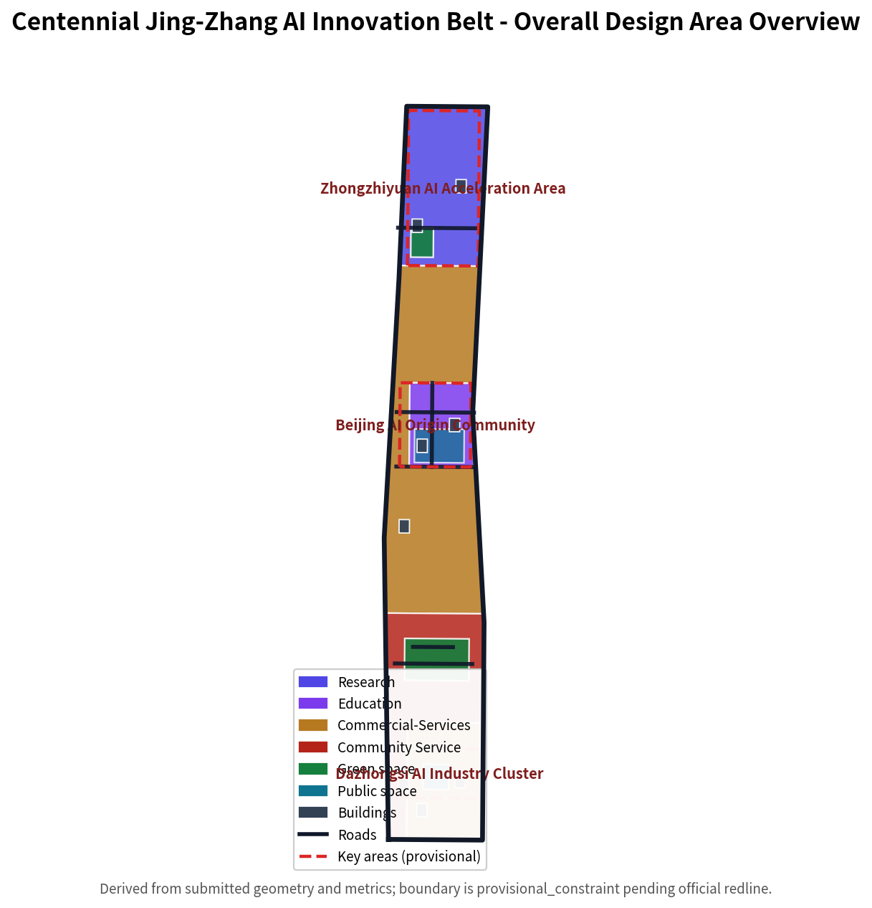

Coordinated research area
43.6 km2 AI industrial ecosystem, three-areas-two-wings coordination, future urban form, and cultural narrative.
- AI innovation and talent chains
- Global case conversion
- Brand naming and communication
Offline electronic display artifact. Authoritative data remains in GeoJSON, metrics.json, matrices, and self-check; this page renders the overview map, three scope levels, key areas, land use, transport/walking, blue-green public space, buildings and renewal projects, AI scenario nodes, core metrics, task coverage, self-check status, sources, and assumptions for human review.
One evidence map combining land use, transport/walking, blue-green public space, buildings/renewal projects, and AI scenario nodes.

Coordinated research, overall design, and key-area scopes bind industrial judgment, urban renewal, and key-area design to layers and metrics.
43.6 km2 AI industrial ecosystem, three-areas-two-wings coordination, future urban form, and cultural narrative.
11.4 km2 urban renewal, land-use structure, transport/municipal, and the Jing-Zhang Ruins Park vitality belt.
Detailed design of three key areas: function, building renewal, public space, and transport organization.
Each key area needs industrial positioning, spatial strategy, building and public-space moves, transport interfaces, and implementation risks.
Garden-style full-stack innovation district; national platforms, industrial display, Qinghe culture, external transport, and low-carbon exchange.
Campus-proximate conversion district; university origination, open-source community, talent services, retain/renovate, and station integration.
Urban intelligent-economy district; leading enterprises, agent formats, commercial services, green-space composite use, and four-quadrant connectivity.
Scenarios state served users, spatial location, data source, privacy boundary, human review, and operator.
Result release and model evaluation node for developers, enterprises, and universities.
Test transport, service, and O&M agents in controlled public space.
Identify Ruins Park slow-traffic gaps with public data and human review.
Connect housing, learning, consumption, sport, and social services.
Display standard setting, trusted evaluation, and governance capability.
Support university result conversion and roadshows.
Dazhongsi display of data assets, intelligent terminals, and content consumption.
Explain distributed energy and edge compute with public services.
Link railway heritage, Zhongguancun innovation, and AI culture.
Developer festivals, scenario open days, contests, and city experience routes.
compliance_matrix.json covers announcement 1.3, 1.4, 1.5 and agent.1-agent.6; standard_matrix.json and design_depth_matrix.json prove professional standards and depth.
Sources are in sources.json, agent_taskbook.json, agent_fact_pack.md, and standards/references. This page loads no CDN, remote tiles, external scripts, fonts, APIs, or iframes.
Pending regulatory plans, road redlines, ownership, municipal works, heritage, and engineering conditions are listed in assumptions.json and their impact explained in the narrative.